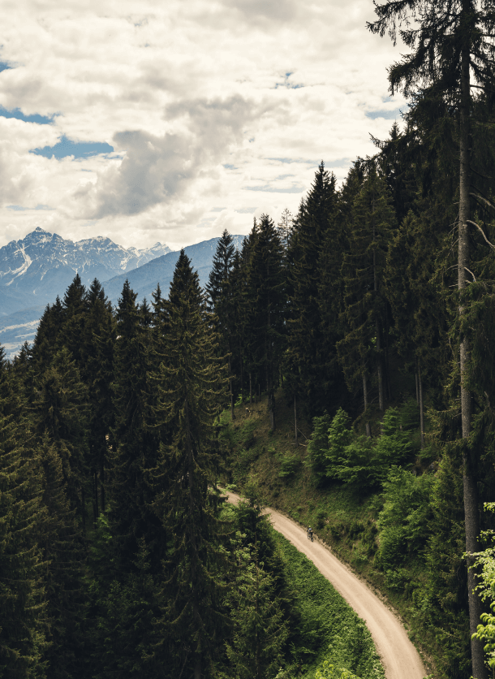
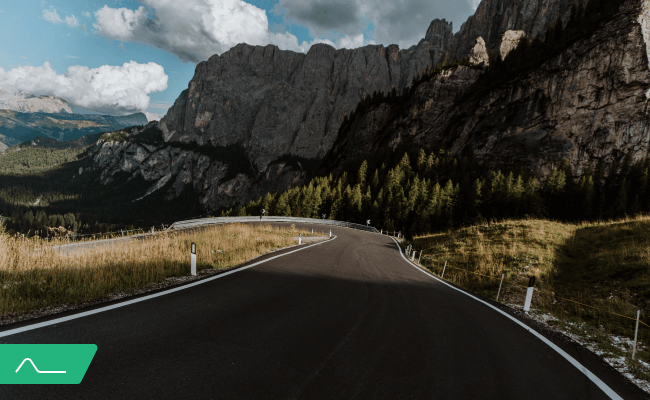
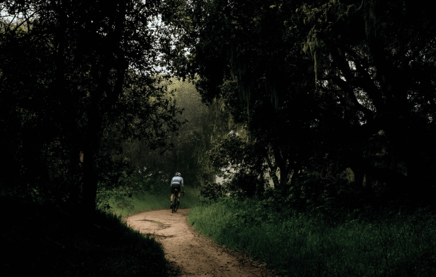
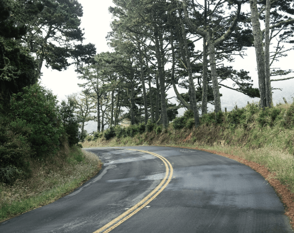

Шоссе, ТТ и Грэвел
Триатлонные старты, горные серпантины или грейвел заезды по живописным маршрутам – нужно только определиться с выбором велосипеда и отправиться в путь.
Cannondale Systemsix
Шоссе
На шоссейном велосипеде можно ездить по асфальту на разных градиентах: будь то горы или равнины. Гонки проходят в командном пелотоне, но тренироваться можно и самостоятельно.


Тренировки
Чтобы найти маршрут для тренировки можно воспользоваться сервисом Komoot, а записать эти тренировки поможет приложение Strava, а также это приложение позволит построить тренировочный план.
